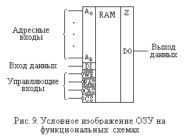
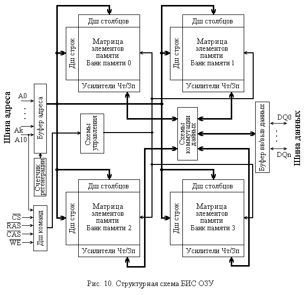

2.1. Организация БИС ЗУ с произвольным доступом
Запоминающие устройства (ЗУ) характеризуются рядом параметров, определяющих возможные области применения различных типов таких устройств. К основным параметрам, по которым производится наиболее общая оценка ЗУ, относятся их информационная емкость (E), время обращения (T) и стоимость (C).
Состав и структура микросхем оперативных ЗУ в процессе совершенствования технологий их изготовления подверглись определенным изменениям.
Первые полупроводниковые оперативные ЗУ строились на схемах малой и средней степени интеграции и включали в себя несколько различных типов микросхем: собственно матрицы элементов памяти, усилители чтения-записи, дешифраторы и, при необходимости, регистры (адреса и данных).
Позднее, с появлением больших интегральных схем (БИС) и повышением частоты их работы, использование раздельных типов микросхем перестало быть оправданным по следующим причинам. Во-первых, количество элементов памяти в матрицах возросло настолько, что число выводов, требующееся для выбора элемента памяти и равное сумме количества строк и количества столбцов матрицы, стало очень большим (несколько тысяч). Во-вторых, длина соединений между микросхемами больше, чем длина соединений внутри микросхемы, что увеличивает время прохождения сигнала и реактивные составляющие (емкость и индуктивность, или перекрестные помехи), а следовательно, уменьшает быстродействие памяти.
Поэтому микросхемы памяти стали включать в себя не только элементы памяти, но и всю остальную электронику управления: дешифраторы, усилители, буферные регистры, схемы управления. Такой состав БИС памяти приводил к известной аппаратной избыточности строящихся на их основе модулей памяти.
Действительно, первые БИС памяти имели логическую организацию вида N одноразрядных слов, или N × 1, где N - количество адресов (одноразрядных слов) микросхемы. Следовательно, каждый разряд модуля памяти, построенного на таких микросхемах, включал свои собственные дешифраторы, буферные регистры и схемы управления, одного комплекта которых при традиционной организации было достаточно для целого модуля. Однако такое дублирование оправдывалось достигаемыми характеристиками памяти, а его стоимость не была чрезмерной (электроника обрамления составляла не более 5-15% от общей площади кристалла микросхемы).
Впоследствии разрядность хранимых в микросхеме слов была увеличена и составляет на сегодня от 4-х до 16-ти разрядов, т.е. N × 4, N × 8, N × 16. Понятно, что относительная доля избыточных схем обрамления при этом падает.
На функциональных схемах микросхема памяти изображается обычным прямоугольником с левым и правым полями, как показано на рис. 9.
Микросхема имеет три группы входов: адресные входы, вход(ы) данных и управляющие входы.
Количество адресных входов (A0÷Ak) определяется емкостью и организацией микросхемы памяти, а также способом подачи адреса. Нетрудно видеть, что емкость микросхемы EСх, равная произведению количества адресов (слов) N на разрядность хранимых слов n, не определяет однозначно требуемое число адресных входов. Для адресации любого из N слов требуется адрес разрядностью log2N. Например, для адресации микросхемы емкостью EСх = 128 Мбит, имеющей организацию 16М × 8 (адресов × бит), достаточно log2 16М = log2 (24 × 220) = 24 разряда.

Способ подачи адреса также оказывает влияние на количество адресных входов микросхемы. Так, распространенный в динамических оперативных ЗУ прием мультиплексирования адресных входов, состоящий в поочередной подаче на одни и те же адресные входы сначала старшей части (половины) адреса - адреса строки (Row Address), а затем - младшей части - адреса столбца (Column Address), позволяет уменьшить вдвое количество требующихся адресных входов. Конечно, это несколько увеличивает время обращения к памяти, но оказывается экономически (да и схемотехнически) оправданным.
В статических ЗУ все разряды адреса подаются на адресные входы одновременно.
Количество входов данных (DI - Data Input) равно разрядности хранимых слов. Количество выходов данных (DO - Data Output) также равно разрядности хранимых слов. Однако во многих случаях входы и выходы данных объединяются, что позволяет уменьшить вдвое количество выводов данных у микросхем памяти, а также упростить их подключение к шинам данных.
Для этого выходы микросхем памяти (или объединенные входы/выходы) обычно имеют специальный выходной каскад, позволяющий подключать к одной шине выходы нескольких микросхем без использования дополнительных сборок ИЛИ. Есть два варианта организации таких выходов: выход с тремя устойчивыми состояниями (или z-выход) и выход с открытым коллектором. Тип выхода отмечается специальным значком в верхней части правого поля изображения микросхемы. На рис. 9 показан z-выход.
Выход данных, реализованный по схеме с открытым коллектором, как правило, инверсный.
Управляющие входы могут заметно различаться как по назначению, так и по обозначениям для разных типов микросхем памяти.
Во всех случаях присутствует вход управления режимом обращения: чтение или запись. Частым его обозначением является WE# (Write Enable - разрешение записи). Вход этот обычно инверсный (это и обозначает символ #), т.е. режим записи включается при нулевом значении сигнала на данном входе, а при единице на входе производится чтение.
Другим общим сигналом, имеющимся почти во всех микросхемах, является сигнал выбора микросхемы - CS# (Chip Select). Этот вход также обычно является инверсным и при единичном значении на нем микросхема переходит в "выключенное" состояние (выход данных микросхемы переходит в состояние высокого выходного сопротивления, если он является z-выходом, или в состояние "1", если это инверсный выход с открытым коллектором). При нулевом значении сигнала на входе CS# микросхема находится в активном состоянии.
В динамических ОЗУ при мультиплексировании адресных входов используются два управляющих входа сигналов строба: RAS# (Row Address Strobe - строб адреса строки) и CAS# (Column Address Strobe - строб адреса столбца, или колонки). Сигналы на этих входах переводятся в активное состояние (в "0") в тот момент, когда на адресных входах установлен адрес строки или адрес столбца соответственно.
Структурная схема БИС динамического ОЗУ показана на рис. 10. Основными ее компонентами являются четыре банка памяти, представляющих собой матрицы элементов памяти с дешифраторами строк и столбцов и усилителями чтения-записи. Кроме собственно банков памяти в состав ОЗУ входят:

- буфер адреса, фиксирующий адреса строки и столбца;Адресный сигнал A10 выделен среди других адресных линий, так как он имеет специальное назначение: при подаче адреса столбца этот сигнал указывает на особенности выполнения последующего (пакетного) чтения или записи, задавая (при единичном значении) режим так называемого автоматического подзаряда банка памяти.